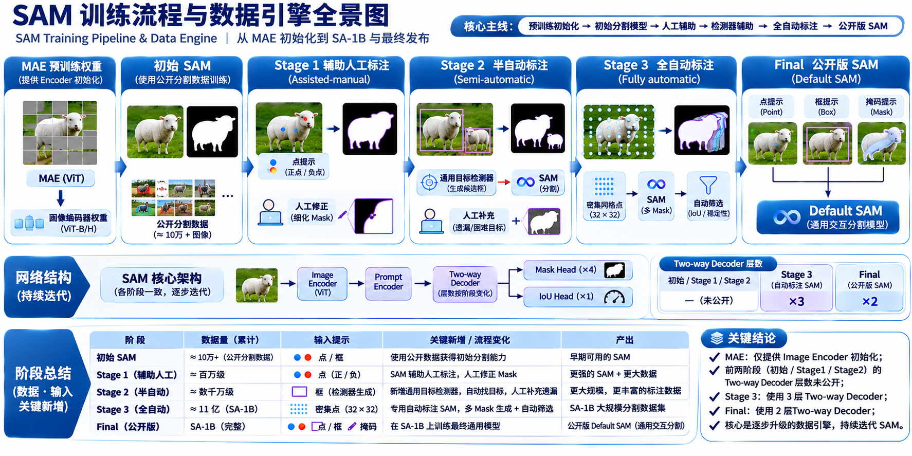
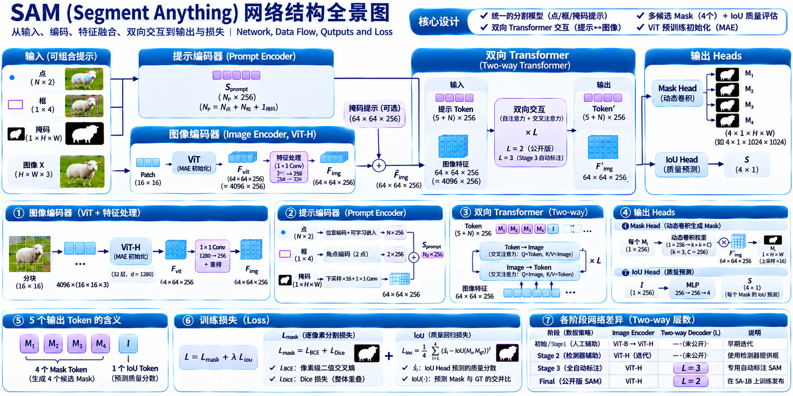
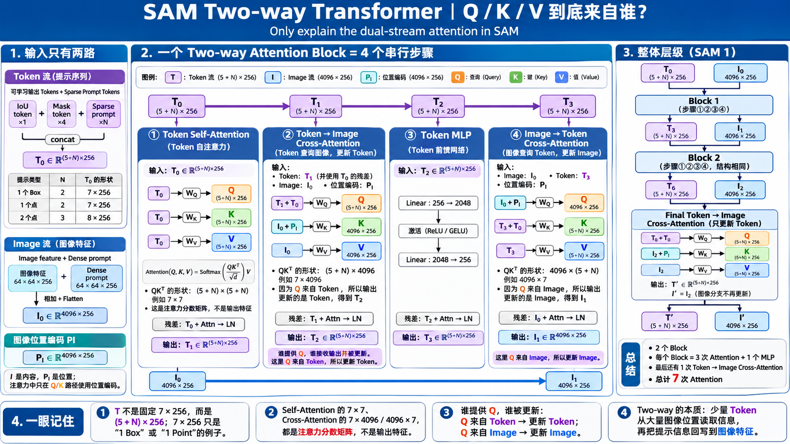

Computer Vision · Research Learning Notes · 2026
SAM 1 完整可视化学习笔记 深度修订版 从「为什么需要 SAM」到「怎么用 11 轮交互与多候选 Loss 训练」，以网络数据流、真实维度、QKV 来源和可计算示例为主线。已知的 ViT / MAE / Transformer 只讲与 SAM 直接相关的变化。
7 章完整教程 动态维度演示 Two-way QKV 逐步追踪 Pixel-level Loss 实验 32×32 自动网格 Window/Global Attention Fourier PE 交互 纠错区域演示 离线 HTML · 无外部依赖
01 SAM 是什么？它真正贡献了什么？从「预测每个像素属于什么类别」改成「根据 Prompt，给出一个合理的目标区域」。
图 1 · 同一张图像，不同提示指向不同区域（示意）
输入图像 Point / Box SAM Promptable Segmentation 输出：有效 Mask 绿色点提示希望包含的区域，红色点提示应排除的区域。Box 与点可单独输入，也可合用；输出不附带预定义语义类别。
1.1 与传统分割任务有什么区别？ 任务 典型输入 预测什么 典型限制 语义分割 图像 每个像素的类别 通常依赖预先定义类别 实例分割 图像 每个实例的 Mask 与类别 通常是已训练类别的检测/分割 交互式分割 图像 + 用户交互 用户指向对象的 Mask 已存在大量相关方法，SAM 不是首创交互点提示 SAM 图像 + 点 / 框 / 粗 Mask 对应 Prompt 的有效分割区域 不给出语义类别，也不是默认自动找出所有对象
1.2 SAM 的贡献不只是网络结构 TASK
统一可提示任务 将点、框、粗 Mask 统一视为“指定分割对象”的条件，并允许模糊提示对应不止一个合理答案。
MODEL
重编码、轻交互 大图像编码一次，多次点击只运行轻量 Prompt Encoder + Decoder；用多 Mask 处理歧义。
DATA
模型生产标注 通过“模型辅助标注 → 新数据 → 改进模型”的闭环建立 SA-1B。
继承与创新： ViT、MAE、Point Prompt、注意力和 Focal/Dice 不是 SAM 全部原创；SAM 的主要贡献是将任务、实时提示模型和规模化数据引擎组合起来。
02 完整训练故事：SAM 权重与数据从哪里来？先理解“初始化权重 → 早期分割能力 → 三阶段数据生产 → 最终训练”这条线，别把数据引擎的三个阶段当作三次网络分层训练。

本章导图 · MAE 预训练权重只负责初始化 Image Encoder；公开分割数据、三阶段数据引擎与 SA-1B 共同构成后续训练主线。 2.1 只有 MAE 怎么可能直接辅助标注？ 已有 MAE 预训练 ViT 仅初始化图像编码器
→
组装 SAM Image / Prompt Encoder + Decoder
→
公开分割数据 + GT 监督训练 Prompt→Mask
→
Early SAM 此时才具有初步分割能力
MAE 只教图像编码器提取通用特征，并没有把 Point / Box 到 Mask 的映射学出来 。初始 SAM 的分割能力来自公开分割数据上的有监督训练，接着才有资格帮助标注员生产新 Mask。这里的“MAE 预训练”属于预先存在的权重来源，不算三阶段数据引擎的第一阶段 。
2.2 三阶段数据引擎：每次改的重点是标注工作流 图 2 · 先用人培养模型，再让模型减少人的工作，最后完全自动标注
01 · 人工辅助 Assisted-manual SAM 人工点击 + 逐像素修正 4.3M Mask 120K 图像 新标注回流 → 更强 SAM
02 · 半自动 Semi-automatic 通用检测器 Box SAM 人工补 遗漏 易分目标先自动；小 / 难目标交给人 +5.9M Mask 新增 180K 图像 · 累计 10.2M Mask 独立检测器是数据工具，不属于 SAM 本体
03 · 全自动 Fully automatic 专用 SAM 多候选 IoU / 稳定性 NMS 网格点 + 裁剪 → 自动候选 → 过滤 1.1B Mask 11M 图像 · SA-1B · 平均约 100 Mask/图 专用自动标注模型 ≠ 最终发布模型
SA-1B → 训练公开版 SAM
2.2A 为什么 Stage 1 重训练 6 次、Stage 2 重训练 5 次？
这里的“6 次 / 5 次”是数据引擎内的模型迭代 ，不是对同一模型依次解冻 Encoder、Decoder，更不是后面介绍的 11 轮纠错训练。
早期 SAM 公共分割数据先教会它分割
→
辅助生产新 Mask 人工修正后成为新的 GT
→
重新训练 SAM 更强的分割质量、更快的标注
↻
再收集更多数据 扩大规模与困难物体覆盖
Stage 1｜模型逐步变强，辅助人工标注更快 第一轮开始时，标注员用公共分割数据训练出的早期 SAM 点击物体；遇到漏分或边界不准，人会继续点或用笔刷修正，修正后的 Mask 被当作可靠的新训练标注。积累足够多之后，就替换标注端的模型 ，继续收集下一批。
数据回路： 收集 → 人工修正 → 新 GT → 重训练。论文称累计重训练 6 次；期间主干从 ViT-B 扩展到 ViT-H，网络其他部分也有修改。
34s → 14s / Mask 20 → 44 Mask / 图 4.3M Mask / 120K 图
Stage 2｜容易物体自动先标，人专门补难的 先用 Stage 1 已有 Mask 训练一个额外的单一 generic object 类别检测器 。它提供容易目标的框，交给 SAM 生成预填充 Mask；人工不必重复标注这些明显对象，集中补漏掉的、小的、长尾的对象。再用这些新增标注更新模型。
论文称 Stage 2 累计重训练 5 次。人工单 Mask 标注时间回升到约 34 秒 并非退步，而是剩下的物体更难标；自动填充的 Mask 不计入这项人工耗时。
新增 5.9M / 180K 图 累计 10.2M Mask 44 → 72 Mask / 图（含自动）
两者的循环目标不同： Stage 1 主要提高标注效率、先积累高质量 Mask；Stage 2 主要提高多样性。它们不是“同一模型训练 6 个 epoch + 5 个 epoch”。
2.2B Stage 3 的「32×32 网格」到底在哪里、具体做什么？
SAM 只会根据 Prompt 分割目标 ，却不能凭空决定全图所有目标的位置。Stage 3 取消人工点击后，必须由程序自动制造 Prompt。这个规则点网格就是最简单的自动点击器。
③ 不止原图：为什么还要额外裁剪 20 个区域？
原图 1 张 × 32×32 点 先尽可能覆盖明显的大物体。
2×2 裁剪 4 张 × 16×16 点 原图中相对小的物体被局部放大。
4×4 裁剪 16 张 × 8×8 点 进一步提升细小目标被点击和分割的机会。
论文实际使用有重叠的裁剪窗口 ，上面的简图省略重叠幅度。每一块都独立采样，最多形成 1024 + 4×256 + 16×64 = 3072 个单点提示位置 （处理质量与边界时还会剔除候选），不是 3072 张最终 Mask。
④ 原始候选为什么只留下约 100 个高质量 Mask？
正点网格 原图 + 20 crops
→
每点多 Mask 含重复与低质量候选
→
质量筛选 predicted IoU、稳定性
→
NMS / 清理 去重、小碎片和孔洞
→
≈100 / 图 自动标注输出
操作 具体规则（论文 SA-1B 生成） 为什么要这一步
预测质量 Predicted IoU ≥ 0.88 淘汰模型自己判断不可靠的候选 稳定性 分别按 Logits 的 −1 与 +1 阈值生成两个 Mask，两者 IoU ≥ 0.95 排除阈值轻微变化就大幅变形的 Mask 去重 Box NMS = 0.7 ；先在单个 crop 内，再跨 crop 去重不同网格点重复分出同一个物体时只保留优选结果 边界与面积 排除贴近 crop 内部边界的候选、覆盖整图 ≥95% 的候选 避免被裁断的不完整物体及无意义的整图前景 小区域修复 去掉 <100 px 的碎连通域，并填补 <100 px 的孔洞 提高标注完整性与干净程度
一眼区分三种“点”： 推理/生产数据时由程序生成 ，目的是遍历全图物体；② 训练第 1 轮的随机正点：从选中 GT Mask 的内部采样 ；③ 后续纠错正负点：从 GT 与当前 Pred 的错误区域采样 。三者不能混为一谈。
2.3 不要把 Stage 3 自动标注模型误认为公开版 SAM 比较 自动标注专用 SAM（Stage 3） 最终公开版 Default SAM 目的 大量生成高质量 Mask 通用、快速的交互式分割 训练数据 人工辅助 + 半自动阶段数据 SA-1B（自动标注结果） Two-way Decoder 3 层 2 层 模拟 Prompt Point + Mask，无 Box；每 Mask 采 4 个点 Point / Box + Mask 反馈；初始 1 次 + 8 次纠错 + 2 次自细化 训练迭代 177,656 90,000，约 2 个 SA-1B epoch
前两阶段的历次模型确实经历了 ViT-B 到 ViT-H 等结构变化，但没有公开足够细的历史配置，无法准确给 Stage 1/2 的每个版本填写 Decoder 层数或冻结清单 。而官方最终模型的训练配方采用 MAE-ViT-H 初始化，并进行完整的分割训练；不要把“某模块在推理时不使用”误写成“训练时冻结该模块”。
最终训练配方（论文） AdamW 90K iterations Batch 256 images
学习率预热 250 step，初始学习率 8×10⁻⁴；在 60k 与 86,666 step 衰减；SA-1B 的 GT 按训练需要采样，每 GPU 最多 64 个 Mask；过滤覆盖图像超过 90% 的 Mask。
有关开源的证据边界 官方公开了模型模块、推理代码和权重，但SAM 1 原始完整训练脚本没有随官方主仓库一起公开 。网络尺寸可以查源码；训练模拟、Loss 和历史研发过程应以论文及附录为准。
03 完整网络：一次前向传播到底走了哪些线？把 SAM 看成两条并行编码路径、一个双向交互模块和两个不同的输出头。先弄清每条数据流，之后再拆内部算法。

本章导图 · 图像与 Prompt 分路编码，Dense Prompt 加到图像特征，Sparse Prompt 与输出 Token 一起进入 Two-way Transformer，最后由两个 Head 输出候选 Mask 与质量分数。 3.1 图像编码：ViT 简写，但 Neck 不能省略 RGB 1024×1024×3
→
ViT-H/16 64×64×1280
→
1×1 Conv + LN 64×64×256
→
3×3 Conv + LN 64×64×256
先保持相机图像长边缩放到 1024，再补齐为 1024×1024。ViT-H/16 的 Patch 尺度为 16，所以输出 64×64 网格。SAM 为高分辨率引入 14×14 Token 的窗口注意力，并在 ViT-H 的 32 层中插入 4 层全局注意力。下方新增专题用可交互图解释原因、信息范围和计算代价。Conv Neck 只有通道映射和局部处理，并不是 FPN / PAN 金字塔。
3.1A 为什么 SAM 不能让 4096 个 Token 每一层都做全局注意力？
你已经会 ViT，这里只改变一个东西：Q 能看到哪些 K/V 。公式还是普通 Self-Attention，不是增加一个新的 Neck，也不是改变 Patch 尺度。
1 输入分辨率让 Token 数激增 1024×1024 图像按 16×16 分 Patch，产生 64×64＝4096 个 Token ，每个是 1280 维。全局注意力每个 Q 都查询全部 4096 个 K，因此一个注意力头要形成 4096×4096≈1678 万 个注意力分数。若 32 层都这样做，注意力的二次方开销很大。
2 窗口注意力并不改 QKV 公式，只缩小可见范围 把 64×64 Token 网格分成 14×14 Token 的局部窗口。每个窗口内部还是 Q=T·Wq, K=T·Wk, V=T·Wv，只是在一个窗口内计算 196×196 的 Attention Scores。窗口之间在这一层互不直接注意。
3 为什么仍需全局层？ 如果目标头部与身体位于不同窗口，纯粹的固定局部注意力就缺少直接跨窗口交换。于是每隔 8 层左右插入一次 Global Attention，所有 Token 再直接互相查看。被全局融合后的信息，会继续留在后面的窗口层中。
3.1B 32 层到底怎么排列？窗口和全局有没有融合模块？
SAM ViT-H 具有 32 个连续 Transformer Block 。其中 28 层窗口注意力，4 层全局注意力；全局层是第 8、16、24、32 层（源码从 0 计数是 7、15、23、31）。
7× Window 局部特征交流
→
1× Global 跨窗口交流
→
重复 4 组 内容逐层更新
→
64×64×1280 尺寸始终不变
不是 FPN / PAN，不是 Swin Shifted Window。 在整个 ViT 主干里空间网格始终是 64×64；只是某些层的 Attention 范围局部，某些层全局。直到全部 32 层结束，后面的 1×1 Conv + LayerNorm → 3×3 Conv + LayerNorm 才把通道从 1280 降至 256，输出给 SAM Decoder。
位置编码补充： ViT-H 本身保留了绝对位置嵌入，并可使用相对位置偏置；这属于 Image Encoder 内部。下面的 Prompt Encoder 随机傅里叶编码专门用于几何提示，不要把两者当成同一个位置向量 。
3.2 Prompt Encoder：Point / Box 与 Mask 走不同通道 稀疏 Sparse Prompts Point (x,y) + 前/背景类型
→
位置编码 + 类型向量 1×256 / 点
Box (x₁,y₁,x₂,y₂)
→
左上 + 右下角编码 2×256 / 框
多个点与 Box 可以并用，沿 Token 维度 Concat。Point 的标签与 Box 两角有不同的可学习类型 Embedding；位置编码来自随机 Fourier 特征（矩阵是固定 buffer）。
稠密 Dense Mask Prompt 输入 Mask logits 256×256×1
→
卷积编码 128×128×4 → 64×64×16 → 64×64×256
Dense Prompt 与图像特征逐位置 ADD ，不是加入 Token 列表。没有输入 Mask 时，扩展一个可学习的 no_mask_embed 到整张 64×64 特征图再相加。
3.2A Point 从 (x,y,label) 变成 256 维：为什么可以、具体怎么算？
先分开两个问题：位置编码告诉模型「在哪里」 ；类型 Embedding 告诉模型「这个位置是什么操作」 。点并不是只有 (x,y)，训练与推理输入都带有 label。
坐标 (x,y) 输入图像坐标系（已缩放/Pad）
→
归一化 [0,1024] → [0,1] → [−1,1]
→
随机 Fourier PE 2 → 128 → sin/cos 拼接 256
+
类型 Elabel 正 / 负 / 框角 / 占位
→
Point Token 1×256
步骤 1｜先把像素坐标变成相对位置
例如输入按 SAM 预处理后是 1024×1024，在 (256,512) 点击。源码先加 0.5 做像素中心对齐，再除以图像宽高，再把 [0,1] 映射到 [−1,1]。
u = 2 · ((x+0.5)/W, (y+0.5)/H) − 1
示意忽略 0.5 时，u ≈ (−0.5,0)。模型实际输入使用与 1024 图像对应的坐标，原图坐标需先按图像预处理比例映射。
步骤 2｜固定随机矩阵，将 2 维扩展为 128 维频率
B ∈ ℝ2×128 （固定随机 Buffer）128
随后分别计算 sin(z) 和 cos(z) ，各 128 维，拼接成 256 维位置编码 。它不是简单把 (x,y) 填充成 256 个数，而是让不同坐标在多种空间频率下具有可比较的特征。
PE(x,y) = Concat[sin(z), cos(z)] ∈ ℝ256
3.2B Prompt Encoder 怎样区分正点、负点、Box 两个角？
输入 传入的 label / 类型 最终 Token（示意） 哪部分可训练
前景正点 label=1PE(x,y) + Eforeground 类型 Embedding；随机 B 固定 背景负点 label=0PE(x,y) + Ebackground 类型 Embedding；随机 B 固定 Box 左上角 / 右下角各一个 PE(x₁,y₁)+Etop-left bottom-right 角类型 Embedding；随机 B 固定 无效点 Padding label=−1直接使用 Enot-a-point （不使用该点的位置 PE） 占位 Embedding
同一位置也能表示相反指令： (256,512,1) 与 (256,512,0) 的 Fourier 位置编码相同，但分别加了两种不同的可学习类型 Embedding，所以网络能够区分“这里要包含”和“这里要排除”。这不是模型自行推断 label，而是用户/API 或训练采样直接提供 label。
3.2C 三种输入都可以用，但不都变成 N×256
Point → Sparse n 个实际点，经位置+类型编码得到 n 个 Token；如果有 Point 但没有 Box，官方实现还会补 1 个 not-a-point 占位 ，因此 N=n+1。
Box → Sparse 一个 Box 被拆成两个角坐标，各生成 256 维 Token：2×256 。它可以和多个点一起传入；若同时提供 Box，就不加前述点占位。
Mask → Dense 上一轮 256×256 Logits 经 2×2 stride=2 卷积得到 128×128×4、64×64×16，再用 1×1 映射到 64×64×256 ，逐元素 ADD 到图像特征。没有 Mask 使用可学习 no_mask_embed。
不要混淆三种位置编码： ① ViT-H Backbone 内部对 Patch 使用的位置；② Point/Box 的随机 Fourier 坐标编码；③ Two-way Transformer 访问 Image 特征时用的 image_pe（同一个随机 Fourier 空间编码器在 64×64 网格上生成）。第二与第三使用相同的编码机制，但张量形状不同。
3.3 完整网络数据流（主图） 图 3 · 两路并行输入：Sparse Concat、Dense ADD、再交给 Two-way Transformer
IMAGE STREAM RGB Image 1024×1024×3 ViT-H / 16 64×64×1280 Conv Neck 64×64×256 + Dense ADD
PROMPT STREAM Point / Box 可选 / 可组合 Sparse Encoder N×256 5 Learnable Tokens 1 IoU + 4 Mask Concat Tokens (N+5)×256
可选输入 Mask → Dense Encoder 256×256×1 → 64×64×256 Two-way ×2 Image + Token 双向更新 末尾再一次 T→I Attention
OUTPUT HEADS Image: 64×64×256 → 256×256×32 4 Mask Token → 4×32 动态权重 4×256×256 Mask logits 1 IoU Token → 4 quality scores
GT Mask → Mask Loss / IoU Quality Loss 注意：图中为了避免交叉箭头，只简化了 Batch 维度和位置编码；源码的张量布局实际常用 B×C×H×W，图中使用更易读的 H×W×C。
3.4 实际 Token 数量不是固定的 7 设点数为 P、框数为 B；每个点一个稀疏 Token，每个框两个角 Token。但官方实现中，有点而无 Box 时，会额外插入一个 not-a-point 占位 Token 。因此实际 N = P + 2B + 占位数量。
可交互｜更改 Prompt，观察 Token 数
点数量 P：1
是否有一个 Box 无 Box 有 Box（+2 Token）
是否输入旧 Mask 无 Mask（no-mask 向量） 有 Mask（Dense 编码）
Sparse Prompt 2×256
Output Tokens 5×256
Decoder Token 输入 7×256
图像分支 4096×256
1 个正点 + 1 个占位 Token；没有 Box。
Prompt Token 不需要专门的“Prompt Loss”。它们与 5 个输出 Token 共同进入 Two-way Transformer，通过最终 Mask 与 IoU 监督 产生梯度；更新后的普通 Prompt Tokens 不直接送入 Head，但已经影响 Mask Token 和图像特征。
04 Two-way Transformer 与 Head：SAM 真正新在哪里？你已经会普通 Transformer，这一章只研究：两条输入如何组成 Q/K/V，为什么每一步更新不同的流，以及最终如何生成像素 Mask。

本章导图 · Q 来自哪一路，就更新哪一路：Token→Image 更新 Token，Image→Token 更新图像特征；两个 Block 后还有一次最终的 Token→Image Cross-Attention。 4.1 先定义两个“会被反复更新的状态” T：Token 流 (5+N)×256
一开始包含 1 个 IoU、4 个 Mask 与 N 个 Sparse Prompt Token。T₀ 是最初的完整序列 ；每经过一个注意力/MLP 操作，T 内容更新，长度不变。
I：Image 流 4096×256
Neck 输出与 Dense Prompt ADD 后，展平为 4096 个图像位置。Pᵢ 是独立的位置编码 ，每层用它参与部分 Q/K 投影，但不会把 I 永久改写成 I+Pᵢ。
位置的角色： 在 Cross-Attention 中，通常使用 (内容 + 位置)WQ/WK 来决定关注谁，使用 内容WV 提取信息。不要将位置编码误认为另一个预测分支或一个可被单独监督的标签。
4.2 一个 Block = 3 次 Attention + 1 次 MLP 图 4 · 串行流程（数据不是并行跑完后再合并）
① Self-Attn Token ↔ Token
→
② T→I Cross Token 从图像读取信息
→
③ Token MLP 256→2048→256
→
④ I→T Cross 图像从 Token 读取信息
② 消耗①更新的 Token；③继续更新 Token；④用③更新的 Token 改写图像。每一步有线性投影，通常还包含残差与 LayerNorm。第一 Block 的 Self-Attention 有一个特殊实现，见下表。
4.3 Q / K / V 到底来自哪里？ 为了不让符号打架，下面用一次 Block 的输入 T、I，将初始完整 Token 序列记作 T₀、图像位置编码记作 Pᵢ，注意每个注意力模块都有自己独立的一套 WQ / WK / WV 。
顺序 Q：谁来查询？ K：与谁匹配？ V：读到什么？ 更新
① Token Self-Attn (T+T₀)WQ(T+T₀)WKTWVToken T ② Token→Image (T¹+T₀)WQ(I+Pᵢ)WKIWVToken T¹→T² ③ Token MLP 无 QKV 输入 T² 256→2048→256Token T²→T³ ④ Image→Token (I+Pᵢ)WQ(T³+T₀)WKT³WVImage I→I¹
严格源码例外： 第 1 个 Block 的 ① 直接用 Q=T₀WQ、K=T₀WK、V=T₀WV，且不走常规的 Self-Attn 残差加法；第 2 个 Block 才采用表中的一般形式（T+T₀）。这不是额外的训练阶段，而是第一层的特定实现。
为什么 7×256 会出现 7×7 / 7×4096 / 4096×7？ SELF
7×7 Q: 7×256QKᵀ: 7×7
7 个 Token 对 7 个 Token 的关系矩阵；输出仍是 7×256 。
T → I
7×4096 Q: 7×128QKᵀ: 7×4096
每个 Token 查询所有图像位置；输出投影回 7×256。
I → T
4096×7 Q: 4096×128QKᵀ: 4096×7
每个像素查询当前 Token；输出投影回 4096×256。
这里用 1 个 Box 的例子得到 7 个 Token。上述矩阵尺寸是合并多头前便于理解的逻辑尺寸 ：原版使用 8 个 Head，Cross-Attention 的投影总通道为 128（每头 16），Self-Attention 总通道为 256（每头 32），每个 Head 实际独立计算自己的注意力分数。
Attention(Q,K,V) = Softmax(QKᵀ / √dₕ) · Vdₕ 是每个 Head 的通道数。Softmax 作用在 K 的序列位置轴上；Q 的数量决定输出位置数量。最后经 Wₒ 投影回 256 通道。
4.4 两个 Block 怎样串联？最后还有什么？ T₀ , I₀ 初始两条输入
→
Block 1 Self→T→I→MLP→I→T得到 T(1), I(1)
→
Block 2 结构相同，参数独立得到 T(2), I(2)
→
最终 T→I Attention 只再更新一次 T得到 T′, I′
两个 Block 不是共享权重的循环执行，而是两层不同参数的 Two-way Block 。Block 2 用 Block 1 的最新 T / I，但每次仍使用初始的 T₀ 与 Pᵢ 来构建某些 Q/K。最后的额外 T→I Cross-Attention 更新 Token，图像特征保持第二个 Block 的输出。
数一数注意力： 每 Block 有 Self + T→I + I→T 共 3 次；2 层 = 6 次，末尾再 1 次 T→I，总计 7 次 Attention 。MLP 是每层附带的前馈运算，不是注意力。
4.5 Dynamic Mask Head：为什么一个 256 维 Token 能变成二维 Mask？ 图 5 · 共享像素特征 × 每个 Mask Token 产生的动态权重 = 4 张独立 Mask
图像分支（共享像素特征） I′: 64×64×256 4096 个图像位置 ConvTranspose + LN 128×128×64 ConvTranspose 256×256×32 Flatten 空间位置 U: 32×65,536
Mask Token 分支（4 个、每个各自 MLP） M0, M1, M2, M3 4×256 4 个独立 MLP 256→256→256→32 动态权重矩阵 W: 4×32
W @ U = Mask Logits 4×32 @ 32×65,536 → 4×256×256 每个像素是 32-D 特征；每个 Mask Token 给出一组 32-D 权重。 对每个像素做 32 维点积，就得到一张 Logit 图。 对第 k 个 Mask： logitₖ(x,y) = Σc=1..32 Wₖ,c · U(x,y,c)这里的 Wₖ 来自第 k 个 Mask Token 的 MLP，是当前图像和 Prompt 条件下的动态系数；不是固定的逐像素分类参数。
4.6 IoU Head：1 个 Token 输出 4 个质量分数 IoU Token 1×256（更新后）
→
3 层 MLP 256→256→256→4
→
4 个预测 IoU [q0,q1,q2,q3]
IoU Token 本身不是一个真实 IoU 值，而是可学习的查询向量，经过图像交互后由专用 MLP 回归 4 张候选 Mask 的质量。预测 IoU 与真实 IoU 不同 ：预测值用于推理排序；真实值由预测 Mask 与 GT 比较得到，用于训练 IoU Loss。
最终输出选择： 内部始终可以生成 4 张 Mask；官方 multimask_output=True 返回 M1–M3 三张，False 返回 M0 一张。4 个不是“所有时候都一起输出给用户”的 4 个并列结果。
05 训练样本：GT、正负点、11 轮纠错前面是“网络怎么生成 Mask”，这一章讲“训练时给它什么输入、怎样用预测错误继续构造 Prompt”。
5.1 一个样本不是“整图所有物体同时分类” 给定一张图像及其多个分割标注，训练时可以选中其中一个 GT Mask 作为当前任务目标。同一张图可以支持多个“提示→Mask”的训练实例 ，但单次 Prompt 分割任务的目标是选中对象，不需要类别 ID，也不需要给密集 Anchor 分配正负样本。
图像 + 一个 GT Mask 目标区域的二值前景
→
初始 Prompt 50% 正点 / 50% 扰动 Box
→
SAM 预测 Mask 256×256 Logits
→
GT 监督 分割与质量 Loss
初始正点在 GT 前景内均匀采样；框来自 GT 的外接框，每个坐标施加随机噪声（标准差约为对应边长的 10%，最多 20 像素），模拟用户稍微松一些、不完全精确的框。这里的正点是用户/训练提示 ，和“被分配为正样本的 Anchor”不是同一个概念。
5.1A 从一张带 GT Mask 的图像开始：到底什么是“一个训练任务”？
假设一张图片标了三只羊，对应三个 GT Mask。我们这一次训练先选定其中一只羊的 GT ，并不是要求网络一次给每个像素做语义分类。网络要学的是：给少量位置提示，输出这只羊的区域 。
RGB 图像 场景里有多只物体
+
选中的 GT Mask 一张二值区域，知道真正前景
→
程序生成初始 Prompt 50% 正点 / 50% 扰动 Box
→
SAM 预测 Mask Logits + 预测 IoU
→
Loss 对比 GT 训练当前目标
初始方式 A｜GT 内部随机一个前景点 因为有 GT，训练程序知道哪些像素属于目标，可以在前景区域中均匀采样一个位置。随后送入 point_coords=(x,y) 与 point_labels=1。这不是随机采一张正样本图片，也不是 Anchor 匹配。
训练模型必须学会：用户只点中目标的一部分，也应尽可能给出一个合理完整 Mask。
初始方式 B｜GT 外接框 + 随机扰动 从 GT Mask 计算最小外接 Box，再分别扰动四个边界坐标。论文使用以对应框边长 10% 为标准差的随机噪声，并限制扰动最大 20 像素，模拟真实用户画得不完全贴边的框。
训练模型必须学会：Box 是指定目标的提示，不要求每个框角精确贴着目标边界。
5.1B 三个“正负”的概念必须分开
名称 由谁提供 哪里用 是否另建 Loss
Prompt 正点 / 负点 用户或训练采样算法 Prompt Encoder 的 label=1/0，控制需要包含/排除的区域 不为点 label 单独训练分类 Head GT 前景 / 背景像素 人工数据集的 Mask 标注 Mask Head 输出与 GT 逐像素做 Focal / Dice 就是分割监督本身 FN / FP 错误区域 比较 GT 和当前 Pred 自动得到 从错误区域采样下一轮纠错点击 不是新 Loss；仍使用最终 Mask Loss
5.2 什么是 GT / Pred / FP / FN？ 图 6 · 用同一目标的 GT 与预测差异决定下一次点击的类型
误差区域 漏分 FN → 正点；多分 FP → 负点 FN（False Negative） ：GT 是前景但模型没有分出来，应该用新的正点 提醒它补上。FP（False Positive） ：GT 是背景但模型错误包含，应该用新的负点 提醒它排除。原论文在错误区域中均匀采样纠错点，并将前一轮未经二值化的 Mask Logits 作为额外输入。
5.2A 一轮纠错到底做了什么？把 GT、Pred 和点连到同一张图
先不要记 11 轮。只看第 1 次预测出错后，第 2 次预测究竟比第一次多收到哪些输入 。核心不是“把 FN/FP 加进 Loss”，而是把预测错误变成可操作的 新 Prompt 。
1 用初始 Prompt 预测第 1 张 Mask 训练程序持有 GT Mask（例如羊的正确区域），模型根据一个正点或扰动 Box 得到一张连续的 Pred Mask Logits。只有当前预测的分割值，不代表它已经知道 GT。
2 用 GT 对比 Pred，找出两种错误 把 Pred 暂时阈值化为前景/背景，和 GT 像素逐一比较。FN=GT 有、Pred 没有 ；FP=GT 没有、Pred 却分出来 。这些错误位置组成一个采点集合。
3 从错误集合选一个点，由 GT 决定标签 若采样点属于 FN，则新增 正点 label=1 ，告诉模型“这里应该加进来”；若来自 FP，则新增 负点 label=0 ，告诉模型“这里需要删掉”。不是把所有错误点一口气全部输入。
4 第二轮需要累积历史 Prompt，并反馈上一轮 Mask 输入现在变成 旧 Sparse Tokens + 新纠错 Point，还有 上一轮 Mask Logits 的 Dense Prompt。图像编码特征复用，重新运行轻量 Decoder，预测改进的 Mask。新 Loss 仍拿同一个 GT 做监督。
5.2B 为什么不直接把预测错误一次改对，而要训练“逐轮纠错”？
推理时用户不可能把目标的每个像素都告诉模型。真实交互是一轮预测、一轮发现错误、一轮再点击。训练若只看第一次提示，模型就没有学到“如何利用用户追加的修正指令”。让一个样本经历多轮 ，本质是在训练模型熟悉不同 Prompt 数量、不同 Mask 质量以及“已经有旧 Mask”时的输入分布。
5.2C 每轮是否重新跑完整 ViT？是否重新计算同一份 GT？
图像不变，因此昂贵的 Image Encoder 特征可以复用；主要反复执行 Prompt Encoder 与轻量 Mask Decoder。GT Mask 同样不变，每轮仅改变提示组合和预测结果。每轮输出仍可与该 GT 计算分割损失，模型逐步学会如何消除错误。
5.3 11 轮不是 11 次独立训练，更不是 11 个网络层 一次训练任务模拟 11 次“用户和 SAM 交互”，让网络习惯一次点、连续点和带旧 Mask 的细化。组成是 1 次初始 Prompt + 8 次纠错采点 + 2 次不增加新点的细化 ；两次细化中，一次随机插入在纠错过程内，另一次总在最后。
互动图 7 · 滑动查看 11 轮各自增加什么信息（示意安排，非固定采样顺序）
当前轮 01 / 11
轮次类型 初始提示
新点是否加入 是
起点：GT Mask 里随机一个正点，或基于 GT 的扰动 Box。
原始图像特征 可复用，不必每轮重算 ViT
+
初始 Point / Box 本轮 Sparse Prompt
+
前一轮 Mask logits 第 1 轮使用 no-mask embedding
→
新 Mask 预测 与 GT 比较，下一轮继续纠错
两个不同的“选择规则”： 多候选训练时，Mask Loss 最小 的候选承担分割监督；而用于下一轮纠错及回传旧 Mask 的，是预测 IoU 最高 的候选。这不是同一个选择过程，切勿混淆。
5.4 Mask Prompt 为什么传 Logits，不传二值 Mask？ 假设某像素上一轮预测概率是 0.51，另一个是 0.99，二值化后都变成 1，但前者实际上很不确定。原版将上一轮未经二值化的连续 Mask Logits 送进 Dense Prompt Encoder，使下一轮可以利用“边界在哪些位置仍不确定”的信息。训练还增加不提供新点击的细化轮次，鼓励模型学会只凭自己的上轮结果继续改善。
需要区分 ① 正点 / 负点
来自用户或者通过 FN/FP 模拟纠错，是输入条件，不是额外的分类 Head。
需要区分 ② 前景 / 背景像素
是与 GT Mask 比较的逐像素 0/1 监督目标。
需要区分 ③ 多候选 Mask
是同一个 Prompt 下的多个有效分割假设，训练通过最小损失策略处理歧义。
06 Loss：怎样监督、哪个候选反传、梯度怎么走？本章从四个具体问题出发：Mask 的像素对错、整个区域是否重合、质量预测是否准确、多候选时谁承担监督。
6.1 所有监督最终都从 Head 的输出开始 图 8 · 一张 GT Mask 对应两条监督支路
GT Mask 目标区域 0/1
对比
预测 Mask Logits 4×256×256（内部）
→
Focal + Dice Mask 监督
预测 Mask 与 GT 计算实际 IoU
对比
IoU Head 4 个预测质量分数
→
IoU MSE 质量监督
6.1A 把“输入 Prompt”和“监督 GT”彻底分开
你可能会问：既然有正点、负点以及 Box，为什么没有 L_point 或 L_box？因为在 SAM 的提示分割任务里，点和框不是要预测出来的标签，而是已知的任务条件 。真正要评估的是分割出的整张 Mask，以及模型预测的 Mask 质量。
Prompt (条件) 例如正点(256,512,1)
+
图像特征 ViT + Neck
→
Two-way + Heads Mask / IoU
←
GT Mask (监督) Focal + Dice / 实际 IoU
反向传播时，Mask Loss 的梯度会从动态 Head 经过 Two-way Transformer，传回包括可学习的 Prompt 类型 Embedding、Mask/IoU Token、Neck 和 ViT 的可训练参数。固定随机 Fourier 频率矩阵 B 不通过梯度更新 ；这个区别不要遗漏。
实现边界： 官方开源的 SAM 1 仓库主要提供网络和推理，不包含原始完整训练脚本。论文给出了训练策略和 Loss，但某些梯度截断、批次聚合等实现细节不能凭模型推理代码冒充官方训练行为。
6.2 Focal Loss：为什么逐像素 BCE 还不够？ 每个像素预测前景概率 p∈[0,1]，GT y∈{0,1}。普通 BCE 会对每个像素产生分类损失，但一张大图可能绝大部分是容易识别的背景；Focal 引入随难度变化的权重，让预测得很确定且正确的像素影响更小 。
pₜ = y·p + (1−y)·(1−p)γ ·ln(pₜ)用于概念理解：αₜ 控制正负像素权重，γ 控制困难样本增强。常见示例为 α=0.25、γ=2；这只是本页数值演示配置，不主张它就是 SAM 论文明确给出的全部内部超参数。
例如对于正像素 y=1，若 p=0.9，困难权重 (1−p)²=0.01；若 p=0.1，困难权重为 0.81。模型预测得越差，Focal 的衰减因子越小 ，这种比较比死记公式更重要。
6.3 Dice Loss：从像素预测转到“整块区域” Dice 直接衡量预测区域和 GT 的整体重合程度。训练通常使用连续概率构造可微的 Soft Dice：
Dice = (2·Σi pᵢyᵢ + ε) / (Σi pᵢ + Σi yᵢ + ε)Dice = 1 − Dice
一个极小的例子：GT = [1,1,0,0]，预测概率 = [0.9,0.4,0.6,0.1]。预测和为 2.0，GT 和为 2，预测与 GT 乘积和为 1.3，所以忽略 ε 时 Soft Dice = 2.6/4 = 0.65 ，Loss = 0.35 。如果按 0.5 阈值二值化，得到 [1,0,1,0]，只有一个 TP，还有一个 FP 和一个 FN，Hard IoU = 1/3。
6.4 小型像素实验：Focal、Dice、IoU 看的是不同东西 下面是一个 6×6 的教学示例 ，不是实际 SAM 推理。调整概率扰动和二值化阈值，可以直接看到连续概率损失与硬分割 IoU 的区别。
绿色：TP 红色：FP 橙色：FN 灰白：TN
TP / FP / FN —
Hard IoU —
Soft Dice Loss —
演示 Focal Loss —
阈值只影响硬 Mask、TP/FP/FN 和 Hard IoU；Soft Dice/Focal 直接使用概率，不会因为改变展示阈值就立刻变化。Focal 演示采用前景 α=0.25、背景 α=0.75，展示难易像素加权平均，不是完整复现 Meta 的训练脚本。
6.5 IoU 质量监督：让模型预测“这张 Mask 有多准” IoU Head 输出 q，而预测 Mask 与 GT 计算出的真实 IoU 是 yIoU 。利用均方误差训练：
LIoU = (q − IoU(Mask_pred, GT))²
例如真实 IoU 是 0.85，质量头预测 0.70，则 MSE = (0.70−0.85)² = 0.0225 。这不是分类置信度，也不直接告诉模型“羊是什么类别”，而是给候选分割结果一个可排序的质量估计。
6.6 多 Mask 的 Minimum-Loss：训练与推理有两套选择规则 单点往往存在歧义：点击一件衣服，可能想要衣服、身体或整个人。SAM 允许多候选，而不是强迫它们输出一个平均的模糊边界。每个候选与同一 GT 算 Mask Loss，再选其中最低的一项进行 Mask 监督 。
LMask multi = mink∈{1,2,3} [20·LFocal (Mₖ,GT) + LDice (Mₖ,GT)]single = 20·LFocal (M₀,GT) + LDice (M₀,GT)total = LMask + 1.0·LIoU
单提示 / 模糊目标 M1、M2、M3
产生三个候选；分割监督选 Mask Loss 最小 者。三个输出 Token 并不被预先指定为固定的“整体/局部/子部件”语义。
多提示 / 明确目标 M0
使用额外的单 Mask 路径，为多轮交互提供稳定的普通梯度信号，而不是始终让三个候选共同学习同一个 GT。
互动图 9 · 对照：分割监督选最小 Loss，下一轮反馈选最高预测 IoU
Minimum-Loss 选中 M2
预测 IoU（示例） [0.60,0.56,0.79]
回传下一轮旧 Mask M3
示例有意设置两者不同：最合 GT 的训练输出和网络自己认为最高质量的输出，不保证同一张。滑动只模拟 Mask Loss 的候选比较，IoU 分数保持示例值。
6.7 反向传播：Prompt Encoder 也在学习，只是没有独立 Prompt Loss 图 10 · 梯度从输出端回流，普通 Prompt Token 不是“没 Loss 就没更新”
Mask / IoU Loss 两个 Head 输出
←
Dynamic Mask / IoU Head MLP、Upscaling、Output Tokens
←
Two-way Transformer 更新 Token 与图像
←
Image Encoder / Neck + Prompt Encoder
Prompt Token 虽然在 Decoder 尾部不直接被选作 Mask Head 输入，但它们早已在 Token Self-Attention、Token→Image、Image→Token 三个步骤里影响输出，因此 Loss 可以沿这条计算图反传到可学习的 Prompt 类型向量、掩码卷积编码器及相关网络权重 。位置编码中作为固定 buffer 的随机矩阵本身则不是待优化参数。
同样要分清：多候选最低 Loss 对应的是当轮直接的分割损失路径 。其他 Token 是否从共享注意力或质量监督获得梯度，取决于它们在完整计算图中的参与，不能简单断言“没选中的 Token 所有梯度都是 0”。
证据边界： SAM 1 官方主仓库没有完整的原版训练脚本，论文提供的是 Loss 的类别、20:1 权重、IoU MSE 与最小损失策略。这里的交互实验和逐像素公式是用于理解的教学计算，不等同于逐行复现官方训练工程。
07 推理：怎么从点击得到 Mask？边界在哪里？把已学模块连接成真实调用流程，再分别理解单目标交互与自动生成整图 Mask 的不同计算代价。
7.1 一次单目标推理：Image Encoder 只跑一次 预处理 RGB 按长边缩放 + Padding → 1024×1024
→
Image Encoder ViT-H + Neck → 64×64×256
→
输入 Prompt Point / Box / 上轮 Mask
→
Two-way + Heads Mask 256×256 + IoU
→
后处理 升采样 / 去 Padding / 恢复原尺寸
对同一张图连续点击时，1024 图像的 ViT 特征可以缓存复用 ；新的 Point、Box 和上轮 Mask 只需要重新经过 Prompt Encoder 与轻量 Decoder。Decoder 的输出是连续的 Mask Logits，不是天然等于原始分辨率的二值 Mask。
常见后处理：先把低分辨率 Logits 从 256×256 插值到 1024×1024，移除为等比例输入而加的 Padding，再插值回原图 H×W；按阈值（默认通常是 Logit 0）转为布尔 Mask。IoU Head 的质量分数可用于在三候选中选择结果。对于需要边界精修的任务，最好保留未阈值化的 Logits 而不是只保存二值图。
7.2 自动生成整图大量 Mask，并不是 SAM 内置检测分类器 图 11 · Automatic Mask Generator（AMG）是批量 Prompt + 后处理管线
全图 32×32 网格点 + 20 张局部裁剪
→
批量 Point Prompt 每点产生多个候选 Mask
→
质量过滤 Predicted IoU + Stability
→
NMS 去重 crop 内 + crop 间
→
大量候选区域 Mask / Box / 质量等元数据
自动数据生成环节 SAM 论文 SA-1B 生成配置 设计原因 全图 Prompt 32×32 规则点网格 不依赖人工或检测器框出对象 局部裁剪 额外 20 张 overlapping crops：2×2 的 4 张、4×4 的 16 张；分别 16×16 / 8×8 点网格 放大小物体，提高小区域覆盖 质量 Predicted IoU ≥ 0.88 先去掉模型自己判断不可靠的候选 稳定性 以 Logits 阈值 −1 / +1 得到两个 Mask，其 IoU ≥ 0.95 排除对阈值微调极敏感的边界 重叠去重 Box-based NMS，阈值 0.7；先 crop 内再 crop 间 减少同一目标的重复 Mask 其他清理 剔除覆盖整图 ≥95% 的 Mask；去除小于 100 px 的离散连通域、填补小孔 减少无意义整图输出和小噪声
需要区分：以上是论文附录报告的 SA-1B 数据生成管线配置 ，并非所有使用者调用官方 SamAutomaticMaskGenerator 时都自动采用完全相同的参数；实际部署要以你的生成器构造参数为准。
7.3 可以做什么？不能直接代替什么？ 适合的工作 给定点 / 框进行通用前景或局部分割 作为模型辅助的数据标注工具 配合现有检测器生成实例 Mask 生成候选区域用于后续筛选 典型限制 原版 SAM 的 Mask 本身不含类别语义 ，不是开放词汇目标检测器 细长结构、非常小的区域与困难边缘可能不稳定 错误 / 模糊 Prompt 会影响输出对象 自动全图分割比单 Prompt 昂贵，还会产生重复和非目标区域 7.4 用一张表复盘 SAM 1 的核心概念 你看到的术语 它到底是谁 有没有独立监督？ MAE 给 ViT 提供初始化权重 SAM 分割阶段不使用 MAE 像素重建 Loss Conv Neck 64×64×1280 → 64×64×256 的两层卷积 无独立 Neck Loss，端到端受分割监督 Sparse Prompt Point、Box 的 N×256 Token 不单独预测类别或回归坐标；通过 Mask Loss 间接更新 Dense Prompt Mask 256×256→64×64×256，ADD 到图像特征 不单独训练一个 Mask 重建目标 4 Mask Tokens 一个单输出 + 三个歧义候选 通过 Head 的 Focal + Dice 分割监督 IoU Token 质量预测的可学习 Token 通过 IoU MSE 监督 Two-way Token 与图像相互读信息，×2 + 一次最终交叉注意力 接受 Head 端损失的反向梯度 11 轮 针对同一目标模拟连续点击与旧 Mask 反馈 不是 11 个网络层或 11 次重新训练 三阶段引擎 人工辅助→半自动→全自动的数据生产研发过程 不是逐阶段“冻结或解冻模块”的标准训练方案
全篇一句话： MAE 先提供图像表征，SAM 用公开分割数据获得初始提示分割能力，再通过数据引擎生成 SA-1B；最终模型让图像特征与 Prompt Token 在 Two-way Transformer 中互相交流，通过动态 Mask Head 产生候选分割，并用 Focal / Dice / IoU 质量监督学会分割与选择。
原始资料与代码入口